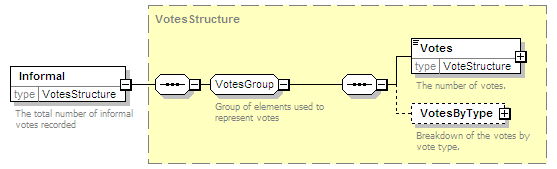

| diagram |  | ||
| namespace | http://www.aec.gov.au/xml/schema/mediafeed | ||
| type | VotesStructure | ||
| properties |
|
||
| children | Votes VotesByType | ||
| used by |
|
||
| annotation |
|
||
| source | <xs:element name="Informal" type="VotesStructure"> <xs:annotation> <xs:documentation>The total number of informal votes recorded</xs:documentation> </xs:annotation> </xs:element> |